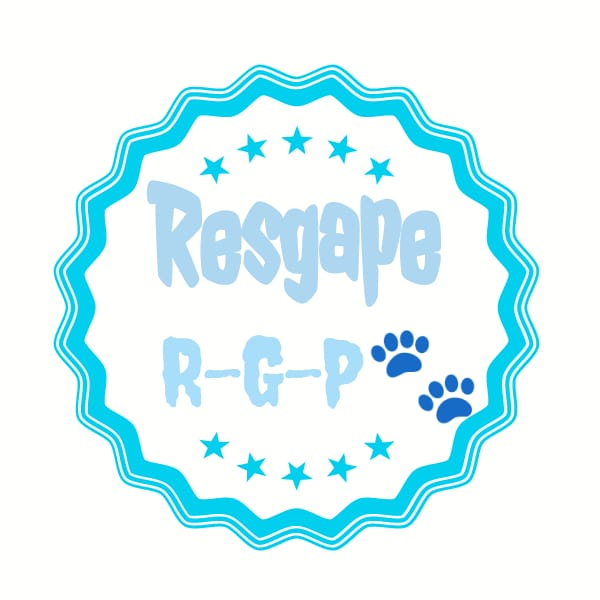
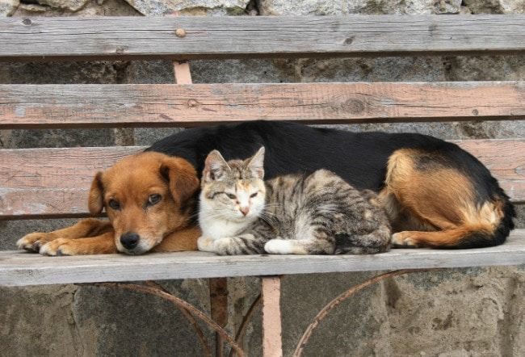
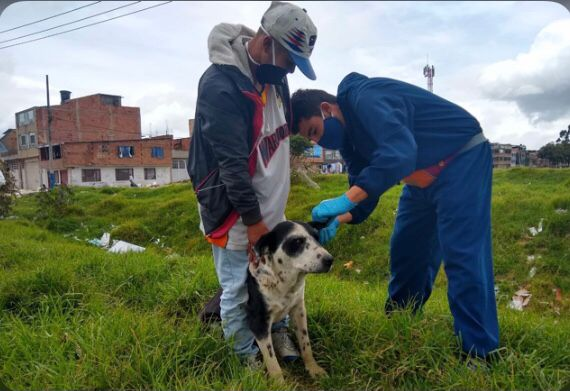
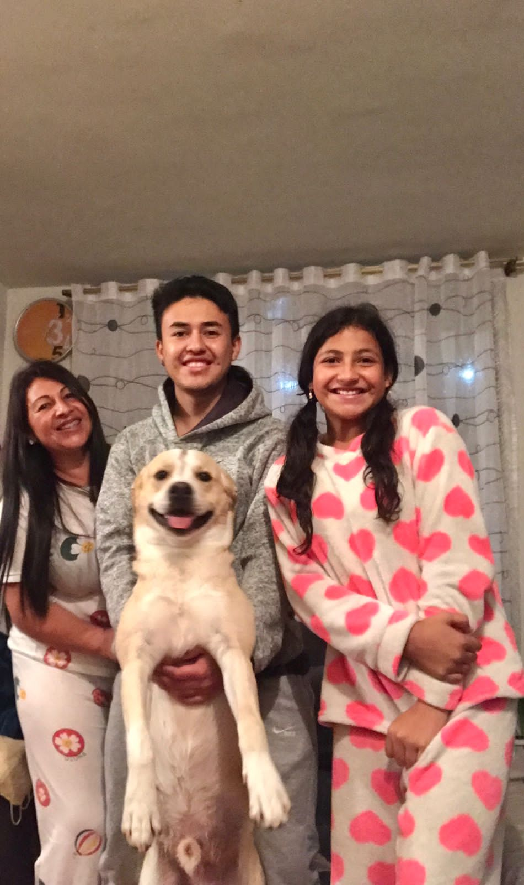
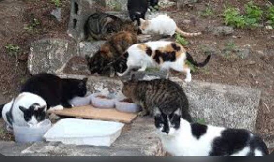
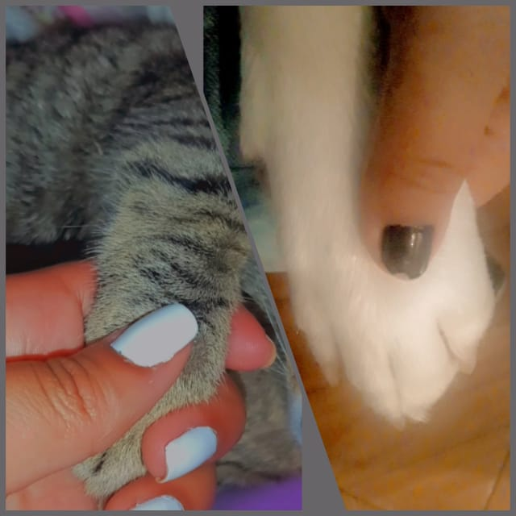
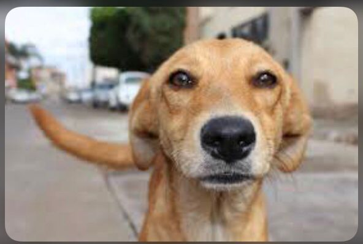
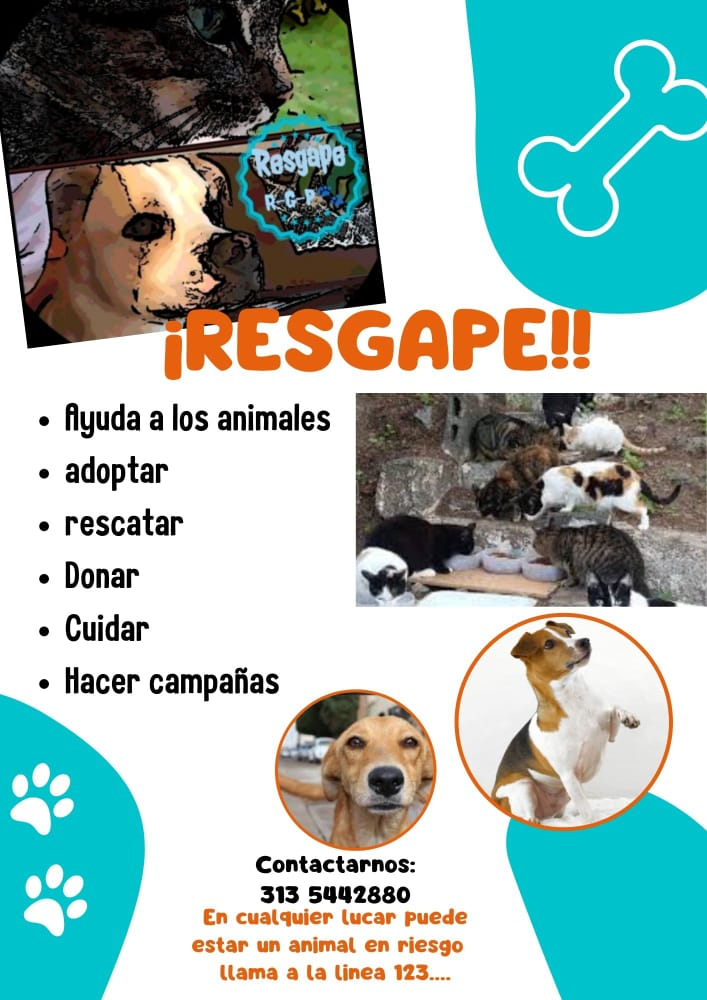

Esta pagina web es creada con el fin de ayudar a la comunidad de Bosa y Ciudad Bolivar, las cuales son las más afectadas con el abandono animal. Aquí se les brinda una guía y datos informativos sobre las causas de abandono que a habido durante los últimos años. Resgape les ayudará con información donde puedan llevar donaciones y adoptar animales.






